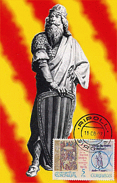
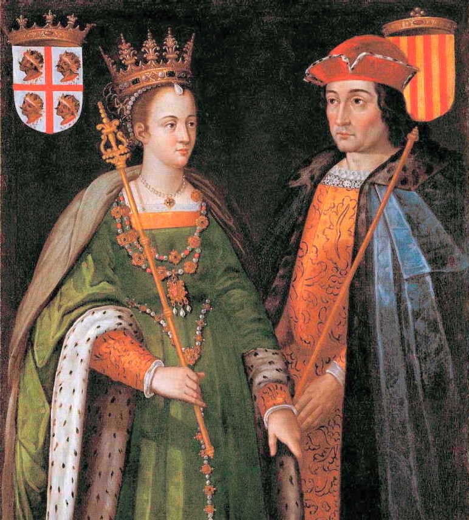

Pre-Integration into "Spain"
The Early Years of Catalunya
Catalan history stretches back to the 9th century when the County of Barcelona was established due to efforts made by Charlemagne, the King of the Franks to establish a buffer in the northern Iberian Peninsula to separate his Christian Frankish Empire and the Muslim controlled Spain. At that time Charlemagne also established several other counties in northern Spain as well.
However, the Frankish control over Catalunya and the other states it had established began to weaken, and the distance between the counts of Charlemagne and his buffer states led to an increase of independence. It was during this gradual decline of Frankish rule that the first non-appointed Ruler Guifré el Pilós (Wilfred the Hairy) took control of Catalunya, wresting control away from the appointed Frankish rulers. While he was not the source of Catalan Independence he did establish a Catalan Centered leadership over the region instead of the Frankish one.
Guifré established his rule in the city of Barcelona. Barcelona grew during this time to become the economic predecessor to its modern counterpart. While Guifré did not establish Catalunya as an independent nation his early political investments were fundamental into that spirit, but also focused on repopulating other parts of the Catalan Region. Repopulation of the region was important because many of its initial inhabitants fled into the Pyrenees during the initial Moorish occupation, and at the forefront of that repopulation was his continued development of infrastructure, security, and military.

The Senyera: Catalunya's Flag
Legend has it that Guifré himself is responsible for the creation of the Catalan flag. The story goes that after being wounded in battle against the Moors (or Normans depending on the account) The Frankish King Charles visited Guifré to commend him for his valor. Rewarding him for his bravery, Charles awarded Guifré his own coat of arms. Noticing his gilded copper shield in the corner, the king took Guifré’s blood stained fingers and dragged them down the shield’s face. Thus creating the Senyera, the official name for the red and gold flag Guifré used as his sigil, and Catalunya used as its official flag.Before he passed, Guifré established something else vital to the continued power of the Catalan region: the beginnings of a feudal-esque system consolidating his role onto the counties of “Old Catalunya,” a rule that extended for the next fifty years through about the middle of the 9th century. Throughout the 10th century there was a continued period of consolidation among Guifré’s successors. It was also during this period where the ties between the broken Carolingian kings finally broke and Catalunya was politically freed from its founders.
 Ramon Berenguer IV inherited the county of Barcelona in the early 12th century at the age of twenty one. It was at this point in their history that Catalunya began to hold national power because in 1137 Berenguer was betrothed to Petronilla of Aragon, an infant at the time who was the heir to the throne of Aragon. Because of her age Berenguer became, in effect, the ruler of Aragon, the Spanish monarchy at the time. Because of this betrothal, and the subsequent rule by Ramon Berenguer IV in Aragon, Catalunya became a regional powerhouse in the form of economic trade giving incredible power to the region and establishing the region in its own right. While also part of the Crown of Aragon (bbc) Catalunya maintained its own traditional rights and its own parliament essentially maintaining its own political identity
Images: Courtesy of Wikimedia Commons Previous Section: CultureNext: Integration Into Spain